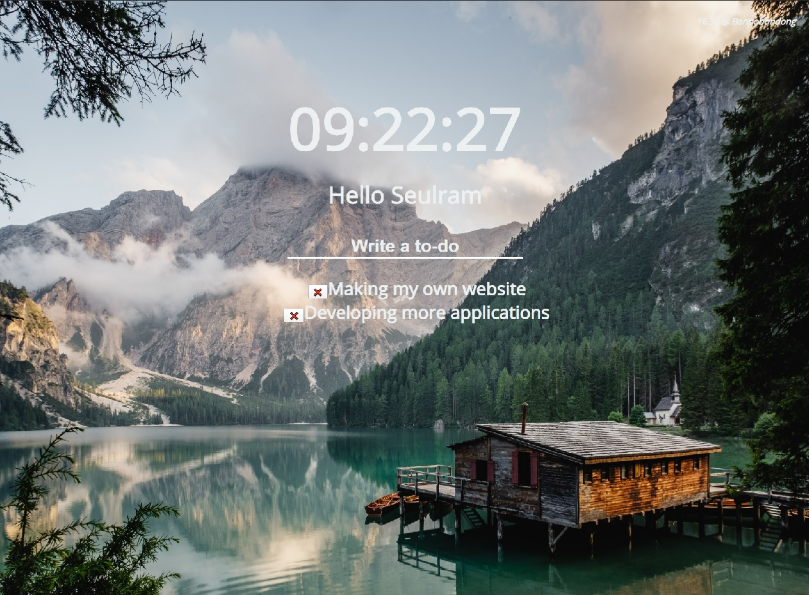
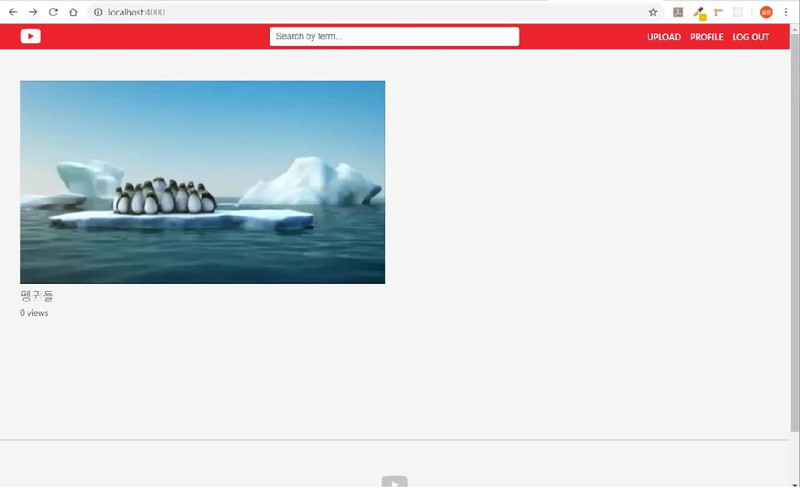
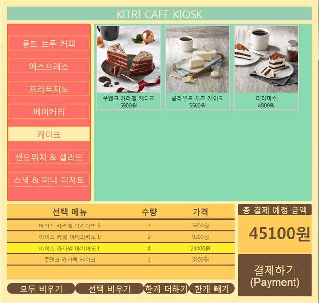

Kakao
카카오톡의 UI 부분을 따라 만들며 HTML5, CSS3, Github 기초지식들을
다졌습니다. 이 프로젝트를 진행하면서 여러 UI들을 따로 만들어
보았고 그 덕분에 현재는 원하는 모양대로 페이지를 코딩할 수 있게
되었습니다.
HTML5
CSS3

Momentum
Momentum이라는 TodoList 크롬 확장 앱을 VanillaJS로
만들어봤습니다. 자신의 지역의 날씨 정보를 api로 받아와 보여주며,
사용자가 작성한 데이터는 local storage에 저장됩니다.
HTML5
CSS3
JavaScript

Wetube
동영상 업로드 및 회원가입이 가능한 유튜브 클론을 만들어
보았습니다. 프로젝트는 MVC 패턴을 따랐으며, 모든 페이지는
pug템플릿을 통해 렌더링합니다. 사용자 정보와 비디오 정보는
MongoDB에서 페이지를 렌더링합니다. AWS S3 서버를 활용해 비디오
정보를 저장합니다.
NodeJS
MongoDB
ES6
Pug
AWS S3

Kitri-Cafe
웹 개발 공부를 배우던 한국 정보연구기술원(KITRI)의 마지막 팀
프로젝트입니다. 체인점 카페의 전체적인 관리를 위한 프로젝트로써
제가 개발한 부분은 MVC 패턴을 활용하여 키오스크와 주방 시스템을
구축하였습니다.
Java
JSP
Spring
Oracle